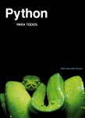

Python es un lenguaje de programación creado por Guido van Rossum a principios de los años 90 cuyo nombre está inspirado en el grupo de cómicos ingleses “Monty Python”. Es un lenguaje similar a Perl, pero con una sintaxis muy limpia y que favorece un código legible. Se trata de un lenguaje interpretado o de script, con tipado dinámico, fuertemente tipado, multiplataforma y orientado a objetos.